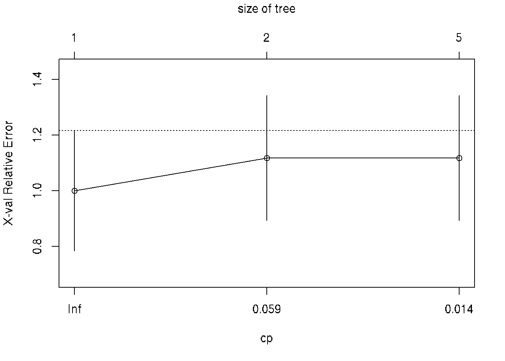
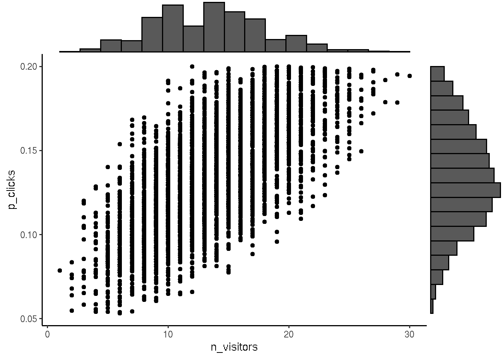

Chapter 38 Bayesian inference
Bayesian data analysis the use of Bayesian inference to learn from data.
Bayesian inference is a method for figuring out unobservable quantities given known facts that uses probability to describe the uncertainty over what the values of the unknown quantities could be.
Bayesian inference is conditioning on data, in order to learn about parameter values.
Bayesian inference is a method of statistical inference in which Bayes’ theorem is used to update the probability for a hypothesis as more evidence or information becomes available.
Bayes’ theorem
\[P( \theta | D ) = frac{P( D | \theta) \pdot P( \theta)}{\sum{P( D | \theta) \pdot P( \theta ) }}\]
\(\theta\) - Parameter values
\(D\) - New data
\(P(D | \theta)\) - Likelihood (the relative) probability of the data given different parameter value.
\(P( \theta )\) - Prior
\(\sum{P( D | \theta) \pdot P( \theta ) }\) - The total sum of the likelihod weighted by the prior.
- A prior is a probability distribution that represents what the model knows before seeing the data.
- A posterior is a probability distribution that represents what the model knows after having seen the data.
Bayesian inference components:
- Data
- Bayesian Model:
- Generative model (
dbinom,dnorm,poissonetc.)
- Priors
- Computational methods:
- Rejection sampling
- Grid approximation
- Markov Chain Monte Carlo (MCMC)
# Visualization function of Bayesian inference for binary data
#library(ggjoy) depreciated use ggridges instead
library(ggridges)
library(ggExtra)
library(tidyverse)
# prop_model function to visualize bayesian posterior distributions
prop_model <- function(data = c(), prior_prop = c(1, 1), n_draws = 10000, show_plot = TRUE)
{
data <- as.logical(data)
proportion_success <- c(0, seq(0, 1, length.out = 100), 1)
data_indices <- round(seq(0, length(data), length.out = min(length(data) +
1, 20)))
post_curves <- map_dfr(data_indices, function(i) {
value <- ifelse(i == 0, "Prior", ifelse(data[i], "Success", "Failure"))
label <- paste0("n=", i)
probability <- dbeta(proportion_success, prior_prop[1] +
sum(data[seq_len(i)]), prior_prop[2] + sum(!data[seq_len(i)]))
probability <- probability/max(probability)
tibble(value, label, proportion_success, probability)
})
post_curves$label <- fct_rev(factor(post_curves$label, levels = paste0("n=",
data_indices)))
post_curves$value <- factor(post_curves$value, levels = c("Prior",
"Success", "Failure"))
p <- ggplot(post_curves, aes(x = proportion_success, y = label,
height = probability, fill = value)) + geom_joy(stat = "identity",
color = "white", alpha = 1, panel_scaling = TRUE, size = 1) +
scale_y_discrete("", expand = c(0.01, 0)) + scale_x_continuous("Underlying proportion of success") +
scale_fill_manual(values = hcl(120 * 2:0 + 15, 100, 65),
name = "", drop = FALSE, labels = c("Prior ", "Success ",
"Failure ")) + theme_light(base_size = 18) +
theme(legend.position = "top")
if (show_plot) {
print(p)
}
invisible(rbeta(n_draws, prior_prop[1] + sum(data), prior_prop[2] +
sum(!data)))
}38.1 Simple model with one binary parameter
# Generate 50 random binary data with P(1)=0.75
data <- sample(c(1, 0), prob = c(0.75, 0.25), size = 10, replace = TRUE)
# Visualize posteriors
posterior <- prop_model(data)# View posterior
head(posterior)## [1] 0.6885118 0.9954317 0.9157077 0.8484793 0.8414593 0.8479106# Center of the posterior
median(posterior)## [1] 0.8518252# The credible interval (CI)
quantile(posterior, c(0.05, 0.95))## 5% 95%
## 0.6327662 0.9674745# Probability of successes > 0.3
sum(posterior > 0.3) / length(posterior)## [1] 1Generate binomial data
p <- 0.42 # probability of success
n <- 100 # number of observations
# Create logical vector, TRUE if numeric value from uniform distribution < p
data <- c()
for (i in 1:n) {
data[i] <- runif(1, min = 0, max = 1) < p
}
# convert logical to numeric 0/1
data <- as.numeric(data)
data## [1] 0 1 0 1 0 0 0 0 1 1 1 0 1 0 0 0 0 0 1 1 0 1 0 0 0 1 0 0 1 0 0 1 0 0 1 0 0 1 1 1 1 0 1 1
## [45] 0 0 0 1 1 0 0 0 1 0 1 0 0 0 0 1 0 1 0 1 0 0 0 0 1 0 0 0 0 0 1 1 0 0 0 1 0 0 0 0 1 1 0 0
## [89] 0 0 0 0 0 0 1 0 0 0 0 1# the same vector using rbinom distribution
n = 100 # number of observations
size = 1 # 0 - fail, 1 - success, for 1 trial
p = 0.42 # probability of success
rbinom(n, size, p)## [1] 0 0 0 1 0 0 0 0 0 1 1 0 0 0 0 0 0 1 0 0 1 1 0 1 0 1 0 0 0 0 1 1 0 1 0 0 0 0 1 0 0 0 0 0
## [45] 1 1 1 1 1 0 1 0 0 0 0 0 1 0 0 0 0 1 0 0 1 1 1 1 0 0 0 1 1 0 0 0 1 1 1 1 1 1 0 1 1 1 0 1
## [89] 1 1 0 0 1 0 0 0 0 1 1 038.2 Grid approximation
To get more visitors to your website you are considering paying for an ad to be
shown 100 times on a popular social media site.
According to the social media site, their ads get clicked on 10% of the time.
How many visitors could your site get?
We can fix % of clicks as 0.1 but we do not know exactly how many clicks people do (uncertain). We suggest the % of clicks is uniformly distributed between 0 and 20.
Define model:
\(n_{ads} = 100\)
\(p_{clicks} ~ Uniform(0.0, 0.2)\)
\(p_{visitors} ~ Binomial(n_{ads}, p_{clicks})\)
n <- 100000 # number of simulations
n_ads_shown <- 100 # number of shown ads
# probability that add will be clicked (assume uniform [0,0.2])
p_clicks <- runif(n, min = 0.0, max = 0.2)
# MODEL: We assume that the binomial distribution is a reasonable generative model
n_visitors <- rbinom(n = n,
size = n_ads_shown,
prob = p_clicks)
# Visualize the prior model simulation
library(ggplot2)
df <- data.frame(x = n_visitors, y = p_clicks)
p <- ggplot(df, aes(n_visitors, p_clicks)) + geom_point() + theme_classic()
ggExtra::ggMarginal(p, type = "histogram", bins = 18)Generate posterior distribution
After the first day of showing ads we registered that 13 people clicked and visited site when the ad was shown 100 times.
# Prior distribution binomial model with uniform clicks
prior <- data.frame(p_clicks, n_visitors)
# To get posterior we subset from prior 13 visitors
posterior <- prior[prior$n_visitors == 13, ]
head(posterior)## p_clicks n_visitors
## 39 0.13318400 13
## 57 0.15608873 13
## 64 0.09112852 13
## 75 0.11852016 13
## 76 0.12653570 13
## 106 0.10590670 13# visualize posterior
p <- ggplot(posterior, aes(n_visitors, p_clicks)) + geom_point() + theme_classic()
ggExtra::ggMarginal(p, type = "histogram", bins = 18)
For the next iteration we make prior from posterior and include new data for subsetting from prior to get posterior.
# Assign posterior to prior for the next iteration
prior <- posterior
# next iteration posterior ~ f(prior)
n <- nrow(prior)
n_ads_shown <- 100
prior$n_visitors <- rbinom(n,
size = n_ads_shown,
prob = prior$p_clicks)
# plot of prior distributions
p <- ggplot(prior, aes(n_visitors, p_clicks)) + geom_point() + theme_classic()
ggExtra::ggMarginal(p, type = "histogram", bins = 18)
Use result of the model for prediction:
# Calculate the probability that you will get 5 or more visitors.
sum(prior$n_visitors >= 5) / length(prior$n_visitors)## [1] 0.9889606# Median number of visitors
median(prior$n_visitors)## [1] 13Updated model We will change prior distribution with knowledge we learn from people that the number of clicks are 5% and sometimes 2 or 8%. We will use beta distribution to setup number of clicks to update prior in our model.
n <- 100000
n_ads_shown <- 100
# Change the prior on proportion_clicks
p_clicks <- rbeta(n, shape1 = 5, shape2 = 95)
# Updated model
n_visitors <- rbinom(n = n,
size = n_ads_shown,
prob = p_clicks)
prior <- data.frame(p_clicks, n_visitors)
posterior <- prior[prior$n_visitors == 13, ]
# Plots the prior and the posterior
par(mfcol = c(1, 2))
hist(prior$p_clicks, xlim = c(0, 0.25))
hist(posterior$p_clicks, xlim = c(0, 0.25))We tested for video banner and now we would like to compair distributions for:
- video ads (13 out of 100 clicked)
- text ads (6 out of a 100 clicked).
n <- 100000
n_ads_shown <- 100
p_clicks <- runif(n, min = 0.0, max = 0.2)
n_visitors <- rbinom(n,
size = n_ads_shown,
prob = p_clicks)
prior <- data.frame(p_clicks, n_visitors)
# Create the posteriors for video and text ads
posterior_video <- prior[prior$n_visitors == 13, ]
posterior_text <- prior[prior$n_visitors == 6, ]
par(mfrow=c(1,2))
# Visualize the posteriors
hist(posterior_video$p_clicks, xlim = c(0, 0.25))
hist(posterior_text$p_clicks, xlim = c(0, 0.25))
# combine data into dataframe
# Make sizes of distrib. the same (4000) to fit to dataframe
posterior <- data.frame(video_prop = posterior_video$p_clicks[1:4000],
text_prop = posterior_text$p_clicks[1:4000])
# Calculate the posterior difference: video_prop - text_prop
posterior$prop_diff <- posterior$video_prop - posterior$text_prop
# Calculate the median of prop_diff
median(posterior$prop_diff)## [1] 0.06535207# Calculate the proportion
mean(posterior$prop_diff > 0.0)## [1] 0.94825# Visualize prop_diff
hist(posterior$prop_diff)
Decision analysis
Our analysis indicated that the video ads are clicked more often.
We would like to estimate probable profit video ads vs text ads if we know:
- Each visitor spends $2.53 on average on our website.
- Video ad costs us $0.25 per click.
- Text ad costs us $0.05 per click.
visitor_spend <- 2.53
video_cost <- 0.25
text_cost <- 0.05
# Add the column posterior$video_profit
posterior$video_profit <- posterior$video_prop * visitor_spend - video_cost
# Add the column posterior$text_profit
posterior$text_profit <- posterior$text_prop * visitor_spend - text_cost
head(posterior)## video_prop text_prop prop_diff video_profit text_profit
## 1 0.1591797 0.04933518 0.10984449 0.152724569 0.07481801
## 2 0.1639834 0.13350068 0.03048271 0.164877969 0.28775671
## 3 0.1342420 0.04359866 0.09064333 0.089632257 0.06030462
## 4 0.1007833 0.03186180 0.06892146 0.004981632 0.03061034
## 5 0.1434389 0.12331007 0.02012884 0.112900432 0.26197447
## 6 0.1953154 0.14542950 0.04988593 0.244148032 0.31793663# Visualize the video_profit and text_profit columns
par(mfrow=c(1,2))
hist(posterior$video_profit)
hist(posterior$text_profit)
# Difference between video and text ad profits
posterior$profit_diff <- posterior$video_profit - posterior$text_profit
# Visualize posterior$profit_diff
hist(posterior$profit_diff)
# Calculate a "best guess" for the difference in profits
median(posterior$profit_diff)## [1] -0.03465928# Calculate the probability that text ads are better than video ads
mean(posterior$profit_diff < 0)## [1] 0.63525 Our analysis showed that text ads will bring probably more profit but the result
is too uncertain and we need more data for making the correct decision.
Our analysis showed that text ads will bring probably more profit but the result
is too uncertain and we need more data for making the correct decision.
Another model for another case
We would like to put up an ad on the site and pay for it per day.
The site admin promise that we will get 19 clicks per day.
How many daily clicks should we expect on average?
We are going to use Poisson distribution for our new model which correspond
to number of successes in a period of time.
n <- 100000
mean_clicks <- runif(n, min = 0, max = 80) # uniform dist between 0 and 80 clicks
# model
n_visitors <- rpois(n = n, mean_clicks)
prior <- data.frame(mean_clicks, n_visitors)
# first day trial showed 13 clicks
posterior <- prior[prior$n_visitors == 13, ]
# visualize prior and posterior
par(mfrow=c(1,2))
hist(prior$mean_clicks)
hist(posterior$mean_clicks)38.3 Grid approximation
The following example shows how we can build the previous model more effective.
We calculating the distribution using dbinom instead of simulating
using rbinom.
We can directly include condition in our model using dbinom instead of rbinom.
Instead of using resul of our trial 13 visitors after showing ads 100 times we
can condition for all posible number of visitors seq(0,100).
n_ads_shown <- 100
p_clicks <- 0.1
n_visitors <- seq(0, 100) # instead of 13 we get for all possible n visitors
# model
prob <- dbinom(n_visitors,
size = n_ads_shown,
prob = p_clicks)
head(prob)## [1] 0.0000265614 0.0002951267 0.0016231966 0.0058916025 0.0158745955 0.0338658038# Plot the distribution
plot(n_visitors, prob, type = "h")
Calculating a joint distribution
n_ads_shown <- 100
p_clicks <- seq(0, 1, by = 0.01)
n_visitors <- seq(0, 100, by = 1)
# Define a grid over all the parameter combinations you need to evaluate
pars <- expand.grid(proportion_clicks = p_clicks,
n_visitors = n_visitors)
pars$prior <- dunif(pars$proportion_clicks, min = 0, max = 0.2)
pars$likelihood <- dbinom(pars$n_visitors,
size = n_ads_shown,
prob = pars$proportion_clicks)
### According to Bayes' theorem:
# Combined probability by the rule of probabilities multiplication
pars$probability <- pars$likelihood * pars$prior
# normalize to the total number to get sum of all probabilities eq 1
pars$probability <- pars$probability / sum(pars$probability)
###
# Conditioning on the data for n_visitors == 6
pars <- pars[pars$n_visitors == 6, ]
# Normalize again to get sum of all probabilities eq 1
pars$probability <- pars$probability / sum(pars$probability)
# Plot the posterior pars$probability
plot(pars$proportion_clicks, pars$probability, type = "h")
We can directly condition and change n_visitors <- 6. In this case we do not
need to subset by pars[pars$n_visitors == 6, ]. Result will be the same.
38.4 Model of birth weights using normal distribution
Let’s assume that the Normal distribution is a decent model of birth weight data.
# Assign mu and sigma
m <- 3500 # central value (mean weight)
s <- 600 # deviation
weight_dist <- rnorm(n = 100000, mean = m, sd = s)
hist(weight_dist, 60, xlim = c(0, 6000))We calculating the distribution using dnorm instead of simulating using rnorm.
# Create weight
weight <- seq(0, 6000, by = 100) # 100 g increment
# Calculate likelihood
likelihood <- dnorm(weight, m, s)
# Plot the distribution of weight
plot(weight, likelihood, type = "h")
Here is a small data set with the birth weights of six newborn babies in grams.
c(3164, 3362, 4435, 3542, 3578, 4529)
Mark: What to do with the data? Should we condition it to get posterior?
38.5 A Bayesian model of Zombie IQ
Check video
temp <- c(19, 23, 20, 17, 23)
mu <- seq(8, 30, by = 0.5)
sigma <- seq(0.1, 10, by = 0.3)
pars <- expand.grid(mu = mu, sigma = sigma)
pars$mu_prior <- dnorm(pars$mu, mean = 18, sd = 5)
pars$sigma_prior <- dunif(pars$sigma, min = 0, max = 10)
pars$prior <- pars$mu_prior * pars$sigma_prior
for (i in 1:nrow(pars)) {
likelihoods <- dnorm(temp, pars$mu[i], pars$sigma[i])
pars$likelihood[i] <- prod(likelihoods)
}
pars$probability <- pars$likelihood * pars$prior
pars$probability <- pars$probability / sum(pars$probability)
sample_indices <- sample(1:nrow(pars), size = 10000,
replace = TRUE, prob = pars$probability)
head(sample_indices)## [1] 524 705 478 749 298 296pars_sample <- pars[sample_indices, c("mu", "sigma")]
head(pars_sample)## mu sigma
## 524 22.0 3.4
## 705 22.5 4.6
## 478 21.5 3.1
## 749 22.0 4.9
## 298 21.5 1.9
## 296 20.5 1.9hist(pars_sample$mu, 30)quantile(pars_sample$mu, c(0.05, 0.95))## 5% 95%
## 17.5 22.5pred_temp <- rnorm(10000, mean = pars_sample$mu, sd = pars_sample$sigma)
hist(pred_temp, 30)
# Probability of 18C
sum(pred_temp >= 18) / length(pred_temp)## [1] 0.7315for the model of temperature but use zombies IQs instead.
Define model:
\(\mu = Normal(mean:18, sd:5)\)
\(\sigma = Uniform(min:0, max:10)\)
\(temp = 19,23,...\)
How much we can learn about the mean zombie IQ from this data.
We need to calculate the probability of each parameter combination in pars.
Use Bayes Theorem to calculate these probabilities and assign them to
pars$probability to complete the model.
# The IQ of a bunch of zombies
iq <- c(55, 44, 34, 18, 51, 40, 40, 49, 48, 46)
# Defining the parameter grid
pars <- expand.grid(mu = seq(0, 150, length.out = 100),
sigma = seq(0.1, 50, length.out = 100))
# Defining and calculating the prior density for each parameter combination
pars$mu_prior <- dnorm(pars$mu, mean = 100, sd = 100)
pars$sigma_prior <- dunif(pars$sigma, min = 0.1, max = 50)
pars$prior <- pars$mu_prior * pars$sigma_prior
# Calculating the likelihood for each parameter combination
for(i in 1:nrow(pars)) {
likelihoods <- dnorm(iq, pars$mu[i], pars$sigma[i])
pars$likelihood[i] <- prod(likelihoods)
}
# Calculate the probability of each parameter combination
pars$probability <- pars$likelihood * pars$prior / sum(pars$likelihood * pars$prior)Calculate new parameters.
head(pars)## mu sigma mu_prior sigma_prior prior likelihood probability
## 1 0.000000 0.1 0.002419707 0.02004008 4.849113e-05 0 0
## 2 1.515152 0.1 0.002456367 0.02004008 4.922578e-05 0 0
## 3 3.030303 0.1 0.002493009 0.02004008 4.996010e-05 0 0
## 4 4.545455 0.1 0.002529617 0.02004008 5.069373e-05 0 0
## 5 6.060606 0.1 0.002566174 0.02004008 5.142633e-05 0 0
## 6 7.575758 0.1 0.002602661 0.02004008 5.215754e-05 0 0sample_indices <- sample(nrow(pars), size = 10000,
replace = TRUE, prob = pars$probability)
head(sample_indices)## [1] 2429 2729 2631 3333 2732 2030# Sample from pars to calculate some new measures
pars_sample <- pars[sample_indices, c("mu", "sigma")]
# Calculate quantiles
quantile(pars_sample$mu, c(0.025, 0.5, 0.975))## 2.5% 50% 97.5%
## 34.84848 42.42424 50.00000head(pars_sample)## mu sigma
## 2429 42.42424 12.19697
## 2729 42.42424 13.70909
## 2631 45.45455 13.20505
## 3333 48.48485 16.73333
## 2732 46.96970 13.70909
## 2030 43.93939 10.18081pred_iq <- rnorm(10000,
mean = pars_sample$mu,
sd = pars_sample$sigma)
# Calculate the probability that zombi has IQ > 60
sum(pred_iq >= 60) / length(pred_iq)## [1] 0.0837par(mfrow=c(1,2))
# Visualize the mean IQ
hist(pars_sample$mu, 100)
# Visualize pred_iq
hist(pred_iq)
38.6 The BEST models
The t-test is a classical statistical procedure used to compare the means of two data sets.
In 2013 John Kruschke developed a souped-up Bayesian version of the t-test he named BEST (standing for Bayesian Estimation Supersedes the t-test).
We would like to compair IQ of two groups of 10 patiens on different diets (a and b).
# The IQ of patients.
iq_a <- c(55, 44, 34, 18, 51, 40, 40, 49, 48, 46)
iq_b <- c(44, 52, 42, 66, 53, 42, 55, 57, 56, 51)
# Calculate the mean difference in IQ between the two groups
mean(iq_b) - mean(iq_a)## [1] 9.3require(BEST)
# Fit the BEST model to the data from both groups
require(BEST)
best_posterior <- BEST::BESTmcmc(iq_b, iq_a)# Plot the model result
plot(best_posterior)
The Bayesian model behind BEST assumes that the generative model for the data is a t-distribution; a more flexible distribution than the normal distribution as it assumes that data points might be outliers to some degree. This makes BEST’s estimate of the mean difference robust to outliers in the data.
Sources